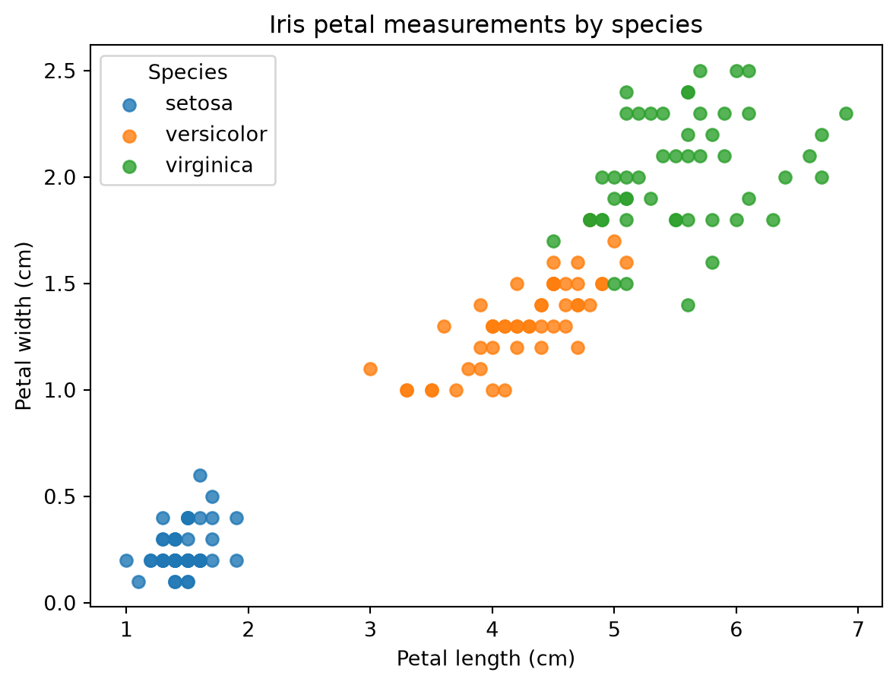

This post uses Python to explore whether sepal and petal measurements can distinguish the three iris species in the classic Iris dataset.
Data: Iris plants dataset, bundled with scikit-learn. The original data were introduced by Fisher (1936) and are distributed with scikit-learn under the BSD 3-Clause license.
The dataset contains four measurements for 150 flowers. I converted the bundled NumPy arrays into a pandas data frame so that the later summary tables are easier to read.
Petal length and petal width are the clearest visual separation in this dataset. Setosa flowers are especially distinct, while versicolor and virginica overlap more.
fig, ax = plt.subplots(figsize=(7, 5))for species, group in iris_df.groupby("species"): ax.scatter( group["petal length (cm)"], group["petal width (cm)"], label=species, alpha=0.8, )ax.set_xlabel("Petal length (cm)")ax.set_ylabel("Petal width (cm)")ax.set_title("Iris petal measurements by species")ax.legend(title="Species")plt.show()

Figure 1: Petal length and petal width separate the three iris species.
I also summarized the average measurements by species. Petal measurements grow steadily from setosa to versicolor to virginica.
To check whether the visual separation is useful for prediction, I trained a logistic regression model. The model uses all four measurements and is evaluated on a held-out test set.
The confusion matrix shows which species were confused in the test set.
confusion = pd.DataFrame( confusion_matrix(y_test, predicted), index=[f"actual {name}"for name in iris.target_names], columns=[f"predicted {name}"for name in iris.target_names],)confusion
predicted setosa
predicted versicolor
predicted virginica
actual setosa
12
0
0
actual versicolor
0
11
2
actual virginica
0
1
12
What I Found
The Iris dataset is small but very structured. Setosa is easy to separate because its petals are much shorter and narrower. Versicolor and virginica are closer together, but the logistic regression model still classifies the held-out examples accurately. This supports the visual pattern: petal dimensions carry most of the species signal.